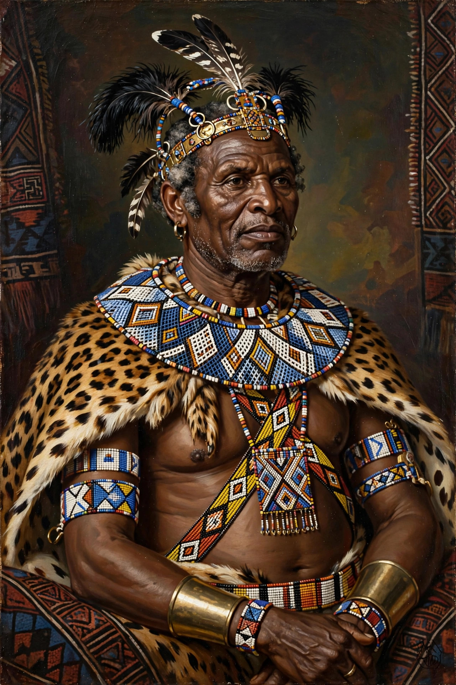

From Wikipedia, the free encyclopedia
| Lobengula | |
|---|---|
 | |
| Reign | c. 1868–1894 |
| Title | King of the Ndebele (Northern Ndebele people) |
| Predecessor | Mzilikazi |
| Died | January 1894 (disputed circumstances) |
Lobengula (c. 1845 – January 1894) was the second and last king of the Northern Ndebele people (Matabele), ruling the kingdom centred on Bulawayo in what is now Zimbabwe. His reign was dominated by the encroachment of European settlers and mining interests during the Scramble for Africa; the concessions he granted — notably the Rudd Concession of 1888 — became the legal pretext for Cecil Rhodes's colonisation of the region.
Lobengula, a son of Mzilikazi, founder of the Ndebele kingdom, was selected king in 1868 after a period of civil strife following his father's death. He established his capital at Bulawayo and ruled through a council of military chiefs, maintaining the kingdom's powerful impi regiments and tribute systems over neighbouring Shona communities.
From the 1880s Lobengula was besieged by agents seeking mining rights. In 1888 he granted the Rudd Concession to agents of Cecil Rhodes, permitting "the complete and exclusive charge over all metals and minerals" in his territory in exchange for arms, money and a steamboat — a document Lobengula later maintained he did not understand. Rhodes used it to obtain the British South Africa Company's royal charter in 1889, and the Pioneer Column occupied Mashonaland in 1890.
Rising settler demands provoked the First Matabele War (1893–94). Lobengula fled Bulawayo as company troops advanced; he died in January 1894, reportedly of smallpox, though accounts vary. His kingdom was absorbed into Southern Rhodesia. The Ndebele remember him as a tragic figure who attempted to navigate an impossible diplomatic situation.